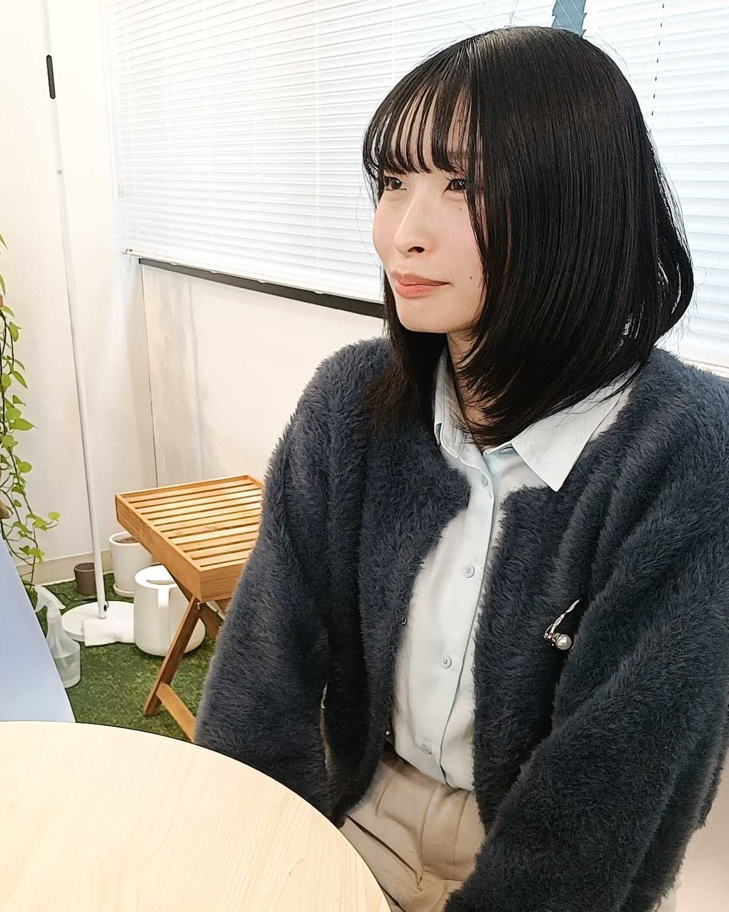
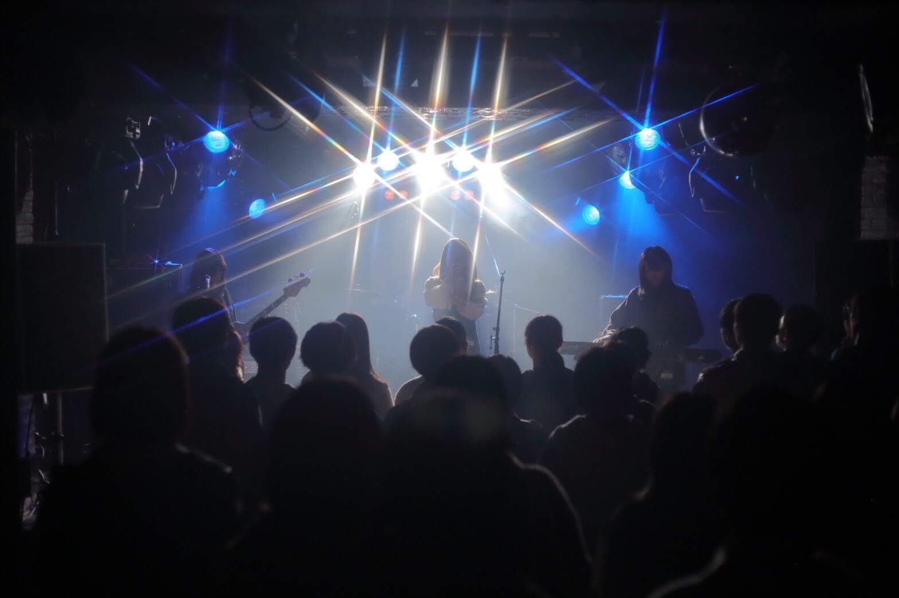

社員の声

G.H
2025年入社 文学部出身
入社前の自分
ー学生時代はどんなことをしていましたか？
アルバイトではキャラクターショップで接客をしていました。お客様と直接関わる中で、感謝の言葉を頂いたり、笑顔を間近で見られることにやりがいを感じ、この経験が「お客様と近い距離で関わりながら、価値を届けられる仕事をしたい」という就職活動の軸の1つになりました。

志望・入社理由
ー入社理由を教えてください。
また、もともとパズルや謎解きなど、頭を使う遊びが好きだったこともあり、システム開発におけるロジカルな思考や、試行錯誤を重ねながら機能を形にしていく過程に面白さを感じていました。 インターンに参加する中で、その楽しさを実感できたことも大きな理由です。
業務について
ー現在の仕事内容を教えてください。
開発では、単に機能を実装するだけではなく、他のメンバーや将来の自分が見ても理解しやすいコードを書くことを意識しています。
また、要件定義の段階では、お客様とコミュニケーションを重ねながら、システムの具体像を明確にしていくことが重要です。決められた順序通りに進めるだけではなく、お客様の不安を早い段階で解消できるよう、先行して調査やデモの作成を進めることもあります。
お客様に初めて実際に動く画面をお見せした際に、良い反応をいただけると嬉しさややりがいを感じます。
ー仕事をする上で、どんな能力が必要だと感じますか？
また、業務の幅が広い分、特定分野に偏らず業務にあたれることや、苦手な分野であっても大きな抵抗なく取り組める柔軟性も重要だと感じます。
入社後の発見
ー入社後に大変だと感じたことはありますか？
ただ、一人で黙々と学ぶだけではなく、理解度確認のために先輩社員と会話する機会も多く、インプットとアウトプットを繰り返しながら学べる環境でした。
また、学習した内容をすぐに実践に移す場面も多く、最初は難しさを感じることもありましたが、自分自身「まずやってみる」という進め方の方が合っていたため、実践を通じて少しずつ理解を深めていけたと思います。
ー入社してから感じた成長や変化はありますか？
入社当初は、「まずは自分でできるところまで進めるべき」という意識が強く、相談のタイミングに悩むこともありました。 ただ、仕事では一人の作業の遅れがチーム全体の進行にも影響するため、自分で調べることを大切にしつつも、周囲を頼ることの重要性を実感しました。
今では、分からないことを一人で抱え込まず、必要に応じて周囲に相談しながら仕事を進めるよう意識しています。